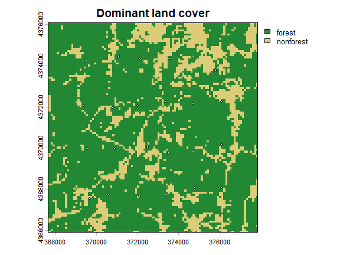
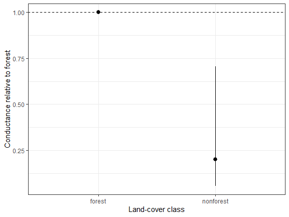
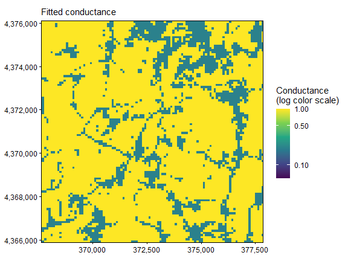
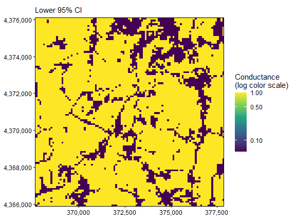
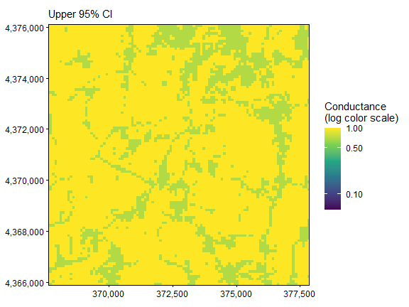

05. Categorical Landscape Covariates
Bill Peterman
Source:vignettes/v05-categorical-conductance.Rmd
v05-categorical-conductance.RmdThe displayed results and figures in this guide were computed from
the executable R Markdown source shipped with the package. Routine
package checks use these precomputed results to keep the CRAN check time
modest. To rerun every code chunk, copy
system.file("vignette-source", "v05-categorical-conductance.Rmd", package = "terradish")
to a writable directory and render that copy with
rmarkdown::render().
Goal. Turn a land-cover code into a named class contrast, then interpret its conductance ratio.
This guide reuses the Ohio landscape and pond locations from vignette("v01-getting-started", package = "terradish"),
so start there if you are new to terradish.
What does a categorical coefficient mean?
A land-cover class labels a type of cell rather than a position on a continuous gradient. National Land Cover Database (NLCD) codes such as 41 (deciduous forest) and 82 (cultivated crops) are labels, so code 82 is not “twice” code 41. Store nominal raster classes as factors, choose a reference class, and interpret each coefficient as a conductance contrast relative to that reference.
The genetic response here is simulated directly from a known class effect, not from the SLiM pond history, so you can compare the fit with the value that generated the data.
Load a factor-valued raster
library(terradish)
library(terra)
library(ggplot2)
data(ohio_ponds)
ponds <- ohio_ponds$ponds
# The installed file contains a packed raster with embedded values and labels.
cover <- unwrap(readRDS(system.file("extdata", "ohio-ponds", "landcover100.rds",
package = "terradish")))
levels(cover)
#> [[1]]
#> ID class
#> 1 1 forest
#> 2 2 nonforest
terra::freq(cover)
#> layer value count
#> 1 1 forest 8175
#> 2 1 nonforest 2229How to read the output. This file groups the
dominant native land cover in each 100 m cell into forest
(native codes 41, 42, 43, and 90) and nonforest. A modal
resample keeps nominal classes, unlike averaging forest indicator cells,
which estimates a continuous fraction. Grouping all nonforest classes is
a declared simplification, because water, roads, cropland, and other
open cells need not share biological resistance.
For your own raster, attach a class table (integer IDs, then labels) as in the template below, and keep it with the raster so predictions and checkpoints retain each class’s meaning.
Specify the reference and contrasts
# Scale the continuous slope layer; leave the nominal cover layer as a factor.
slope <- scale_covariates(unwrap(ohio_ponds$covariates)[["slope"]])
surface <- conductance_surface(c(cover, slope), ponds[c("x", "y")], directions = 8)
surface$x$landcover <- relevel(surface$x$landcover, ref = "forest")
contrasts(surface$x$landcover) <-
contr.treatment(levels(surface$x$landcover), base = 1)
levels(surface$x$landcover)
#> [1] "forest" "nonforest"
head(model.matrix(~ landcover, surface$x))
#> (Intercept) landcovernonforest
#> 1 1 0
#> 2 1 0
#> 3 1 0
#> 4 1 0
#> 5 1 0
#> 6 1 0How to read the output. Treatment coding makes
forest the reference and adds one indicator column for nonforest, so
classes give
contrasts. The intercept in model.matrix() only shows the
coding convention. The fitted conductance model drops the overall
conductance intercept, because the measurement scale absorbs that
arbitrary multiplier.
All sampled ponds are forest-screened, but the graph also contains nonforest matrix cells. The class effect is inferred through paths among ponds, not by regressing genetic response on each pond’s land-cover label. How well each class is represented across the graph, and where alternate routes run, determine how well this contrast can be estimated.
terra::plot(cover, col = c("#228833", "#DDCC77"), main = "Dominant land cover")
points(ponds$x, ponds$y, pch = 21, bg = "white", cex = 0.6)
Generate a specified covariance example
The known nonforest/forest conductance ratio is
,
about 0.37. simulate_covariance_response() builds the model
covariance from that conductance surface, then draws a noisy sample
covariance from it. nu is the effective Wishart
information, and a larger value (here 120) gives a response closer to
the true covariance.
benchmark <- simulate_covariance_response(
theta = c(landcovernonforest = -1), formula = ~ landcover, data = surface,
tau = 1, sigma = 0.02, nu = 120, seed = 61303)
S <- benchmark$covarianceThe simulator’s sigma = 0.02 is the nugget
variance itself, whereas the fitted measurement
sigma is its log. Slope has no effect in this
simulation.
The graph carries a slope layer that the class-only
formula does not use. When you run the fits below,
terradish() warns that it removed the unused layer. That
warning is expected here, and this guide does not print it.
Fit and interpret the class contrast
control <- NewtonRaphsonControl(maxit = 200, ctol = 1e-8, ftol = 1e-8)
fit <- terradish(S ~ landcover, surface,
measurement_model = wishart_covariance, nu = 120,
optimizer = "bfgs", control = control)
summary(fit)
#> Conductance surface with 10404 vertices (24 focal) estimated by maximum likelihood
#> Call: terradish(formula = S ~ landcover, data = surface, measurement_model = wishart_covariance,
#> nu = 120, optimizer = "bfgs", control = control)
#>
#> Loglikelihood: 974.5133 (3 degrees freedom)
#> AIC: -1943.027
#>
#> Number of function calls: 14
#> Number of optimization steps: 6
#> Convergence: converged | projected gradient: 5.01e-13
#> Norm of gradient at MLE: 5.011068e-13
#>
#> Nuisance parameters (conditional on fitted conductance surface; measurement-model scale):
#> Estimate Std. Error Lower 95% Upper 95%
#> tau 0.7806 0.0820 0.6199 0.9413
#> sigma -3.2267 0.3417 -3.8965 -2.5569
#>
#> Coefficients:
#> Estimate Std. Error z value Pr(>|z|)
#> landcovernonforest -1.6021 0.6395 -2.505 0.0122 *
#> ---
#> Signif. codes: 0 '***' 0.001 '**' 0.01 '*' 0.05 '.' 0.1 ' ' 1
ratio <- exp(coef(fit)[["landcovernonforest"]])
data.frame(contrast = "nonforest / forest", conductance_ratio = ratio,
percent_change = 100 * (ratio - 1))
#> contrast conductance_ratio percent_change
#> 1 nonforest / forest 0.2014682 -79.85318
exp(confint(fit))
#> 2.5 % 97.5 %
#> landcovernonforest 0.05752426 0.7056056How to read the output. The model is
Forest, the reference class, has conductance one, and nonforest has
conductance
,
so a negative coefficient gives a ratio below one. Here the estimated
nonforest/forest ratio is 0.20: nonforest cells conduct about 80% less
than forest cells, with a 95% interval for the ratio of 0.06 to 0.71.
That interval contains the true ratio of 0.37, so this fit is consistent
with the simulated class effect. It does not show reliable recovery. The
estimate is well below the truth, the interval spans more than a tenfold
range, and this is one simulated draw. Repeated draws, as in vignette("v10-simulation-design", package = "terradish"),
are what show how often a design recovers an effect. The ratio is a
contrast in graph conductance, not the fraction of animals that cross
open habitat.
| Parameter | Where it appears | What it measures |
|---|---|---|
landcovernonforest |
coef(fit) |
Log conductance of nonforest relative to forest; exponentiate for the ratio |
slope in a mixed candidate |
coef(fit) |
Change in log conductance per SD of slope, within a class |
tau |
summary(fit)$phi |
Weight of the graph covariance (true value 1) |
Measurement sigma
|
summary(fit)$phi, log scale |
Log of the extra variance added to each pond (true variance 0.02) |
Why the nuisance intervals miss their true values.
In the summary above, the tau interval lies below its true
value of 1, and the sigma interval lies just above
.
The fitted nugget variance, 0.04, is about twice the simulated 0.02.
These intervals are conditional on the fitted conductance
surface, as the block header says, so they ignore uncertainty
in the class coefficient and are too narrow to read as stand-alone
intervals. The parameters also trade off. This draw overestimates the
class effect (a coefficient of -1.60 against a true -1), which lengthens
resistance distances and pulls tau down to compensate. Read
tau and sigma as descriptions of this fit, not
as tests of the simulated values.
In an interaction model such as landcover * slope, each
class contrast applies at slope zero (the full-domain mean after
standardization), and the interaction lets the slope association differ
by class. Fit such a model only when the design can identify those extra
parameters.
Plot a class contrast and its map
The package’s type = "marginal" plot draws curves for
continuous predictors only. In a mixed model it skips factor predictors
with a warning, and for a class-only model such as this one it stops
with an error because no continuous predictor remains. Plot the
estimated class ratio directly instead. A line between forest and
nonforest would have no meaning.
ci <- exp(confint(fit))
classes <- data.frame(class = c("forest", "nonforest"),
estimate = c(1, ratio), lower = c(1, ci[1, 1]), upper = c(1, ci[1, 2]))
ggplot(classes, aes(class, estimate)) +
geom_hline(yintercept = 1, linetype = 2) +
geom_pointrange(aes(ymin = lower, ymax = upper)) +
theme_bw() + labs(x = "Land-cover class", y = "Conductance relative to forest")
How to read the plot. A ratio below one means nonforest conducts less than forest. The reference has no interval because it defines the scale.
maps <- plot(fit, type = "surface", data = surface)
C <- conductance(surface, fit)
map_limits <- range(terra::values(C), na.rm = TRUE)
# Keep all cells and share limits across the estimate and both bounds.
for (p in maps) {
print(p + scale_fill_viridis_c(
trans = "log10", limits = map_limits,
breaks = c(0.01, 0.1, 0.5, 1, 2, 5, 10, 20),
name = "Conductance\n(log color scale)"
))
}


The log color limits are shared by the three panels of this fit only,
so check the legend before comparing models. The factor map has abrupt
class boundaries and does not describe smooth transitions or variation
within a class. conductance(surface, fit) returns the same
estimates and bounds as raster layers for further mapping.
Verify what changing the reference does
other_reference <- surface
other_reference$x$landcover <- relevel(surface$x$landcover, ref = "nonforest")
contrasts(other_reference$x$landcover) <-
contr.treatment(levels(other_reference$x$landcover), base = 1)
fit_reverse <- terradish(S ~ landcover, other_reference,
measurement_model = wishart_covariance, nu = 120,
optimizer = "bfgs", control = control)
stopifnot(fit_reverse$convergence$code == 0,
fit_reverse$fit$subproblem$convergence == 0)
c(nonforest_over_forest = exp(coef(fit)[["landcovernonforest"]]),
forest_over_nonforest = exp(coef(fit_reverse)[["landcoverforest"]]))
#> nonforest_over_forest forest_over_nonforest
#> 0.2014682 4.9635621
c(maximum_fitted_covariance_difference =
max(abs(fitted(fit) - fitted(fit_reverse))))
#> maximum_fitted_covariance_difference
#> 6.031287e-14How to read the output. Reversing the reference flips the contrast’s label and sign, so the ratios are approximately reciprocals. The fitted genetic covariance should agree within optimization precision once the measurement scale adjusts. A reference class is a coding convention, not a claim that its absolute conductance is biologically known.
Evaluate class and continuous candidates on the same folds
cv <- terradish_cv_folds(surface,
list(uniform = S ~ 1, categorical = S ~ landcover,
mixed = S ~ landcover + slope),
folds = ponds$fold, model = wishart_covariance, nu = 120,
nuisance = "fixed", optimizer = "bfgs", keep_fits = "none", control = control)
stopifnot(all(cv$results$error == ""),
all(cv$results$nuisance_iterations == 0))
cv$summary
#> model folds failed n_folds_ok total_loglik common_folds_total
#> 1 categorical 3 0 3 957.0979 957.0979
#> 2 uniform 3 0 3 956.1142 956.1142
#> 3 mixed 3 0 3 955.0624 955.0624
#> n_common_folds between_repeat_sd mean_loglik total_loglik_gain
#> 1 3 NA 319.0326 0.9837159
#> 2 3 NA 318.7047 0.0000000
#> 3 3 NA 318.3541 -1.0517992
#> mean_loglik_gain se_difference mean_difference within_one_se
#> 1 0.3279053 0.0000000 0.0000000 TRUE
#> 2 0.0000000 0.7541902 -0.3279053 TRUE
#> 3 -0.3505997 0.8614202 -0.6785050 TRUEHow to read the table.
terradish_cv_folds() scores only the pairs of ponds within
each held-out block, not pairs that join a training pond to a held-out
pond (see how spatial
cross-validation scores models). Larger held-out log-likelihood is
better. The categorical model scores highest, but only 0.98 units above
uniform conductance summed over three blocks. within_one_se
is TRUE for both uniform and
mixed. Read that column as a descriptive tie flag, not a
decision, because its standard error comes from only three blocks. With
24 ponds, held-out prediction cannot distinguish this class effect from
uniform conductance, even though the full-data interval is consistent
with it. Adding slope lowers the summed score slightly, which is the
expected direction for a covariate with no simulated effect. Every fold
keeps the full landscape graph, so both classes stay present and only
the scored ponds change.
Smoothing land-cover classes
Do not Gaussian-smooth integer class codes (the Gaussian conductance
model rejects factors). If forest context is the
question, derive a forest indicator or fraction and smooth that
continuous quantity, as in vignette("v07-gaussian-scale-optimization", package = "terradish").
For several class proportions that sum to one, omit one class as the
reference. The conductance model has no intercept because a constant
multiplier on conductance is not identifiable, and proportions that sum
to one add up to exactly such a constant. Including every proportion
therefore leaves the contrasts unidentifiable.
Quick reference: a categorical conductance workflow
library(terradish)
library(terra)
data(ohio_ponds)
# 1. Retain category labels; the file embeds both values and the class table.
cover <- unwrap(readRDS(system.file("extdata", "ohio-ponds", "landcover100.rds",
package = "terradish")))
graph <- conductance_surface(cover, ohio_ponds$ponds[c("x", "y")])
graph$x$landcover <- relevel(graph$x$landcover, ref = "forest")
contrasts(graph$x$landcover) <- contr.treatment(levels(graph$x$landcover), base = 1)
# 2. Make the response explicit: this benchmark is not SLiM genotype data.
S <- simulate_covariance_response(c(landcovernonforest = -1), ~ landcover,
graph, tau = 1, sigma = 0.02, nu = 120, seed = 61303)$covariance
# 3. Fit a class contrast, then exponentiate to a relative conductance ratio.
# nu is the effective Wishart information assumed for this response.
fit <- terradish(S ~ landcover, graph,
measurement_model = wishart_covariance, nu = 120, optimizer = "bfgs",
control = NewtonRaphsonControl(maxit = 200, ctol = 1e-8, ftol = 1e-8))
fit$convergence
fit$fit$subproblem$convergence
exp(coef(fit))
exp(confint(fit))
# 4. Evaluate prediction with whole ponds held out and fixed test parameters.
cv <- terradish_cv_folds(graph, list(categorical = S ~ landcover),
folds = ohio_ponds$ponds$fold, model = wishart_covariance, nu = 120,
nuisance = "fixed", optimizer = "bfgs",
control = NewtonRaphsonControl(maxit = 200, ctol = 1e-8, ftol = 1e-8))
cv$summary # scores pairs within each held-out block; within_one_se is a tie flagSummary of key functions
| Function | Purpose |
|---|---|
terra::as.factor() and levels()
|
Preserve nominal raster classes and labels |
relevel() and contr.treatment()
|
Specify reference classes and contrast coding |
model.matrix() |
Inspect the indicator columns used in a formula |
simulate_covariance_response() |
Create an explicit statistical covariance example |
terradish() |
Fit the class-based conductance hypothesis |
exp(coef()) and exp(confint())
|
Express log contrasts as conductance ratios |
terradish_cv_folds() |
Compare predictions on common held-out sites |
See also
-
vignette("v01-getting-started", package = "terradish"): genotype construction, graph, and measurement parameters. -
vignette("v07-gaussian-scale-optimization", package = "terradish"): estimate the context of continuous forest fraction. -
vignette("v06-spline-conductance", package = "terradish"): response shape for continuous covariates. -
vignette("v04-model-comparison", package = "terradish"): ranking candidate formulas by AIC, likelihood-ratio tests, and prediction. -
vignette("v10-simulation-design", package = "terradish"): simulating responses withsimulate_covariance_response()to plan a study. -
?conductance_surface: factor-valued raster support and graph metadata.